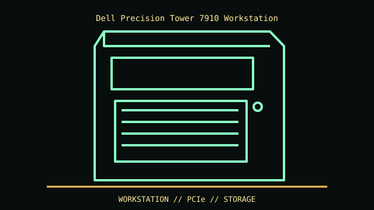

[ IDENTIFIED ENCLOSURE // DELL PRECISION TOWER 7910 (T7910) ]
Dell Precision Tower 7910 Workstation
430 × 216 × 545 mm (H × W × D); minimum mass around 16.3 kg, configuration dependent. Large tower with model-specific airflow and PSU volume.

REVISION / FIT CAVEAT: T7910 differs from T7910 XL, T7810 and T7910 rack configuration. Service tag and system board/PSU/riser SKU govern graphics and storage fit.
Model-specific mechanical record
| Catalog leaf | Professional workstation enclosures |
|---|---|
| Identity / generation | Dell Precision Tower 7910 (T7910) |
| Dimensions / clearance | 430 × 216 × 545 mm (H × W × D); minimum mass around 16.3 kg, configuration dependent. Large tower with model-specific airflow and PSU volume. |
| Drive bays / mounts | Two external 5.25-inch bays and internal 3.5-inch/2.5-inch storage positions depend on installed caddies; do not count the external bays as internal disk slots. |
| Board / chassis compatibility | Proprietary Dell dual-socket board, PSU and card retainers. Full-length double-width GPU support is documented up to about 312 mm in supported layouts; confirm riser/slot, cable and thermal kit. |
| Revision identification | T7910 differs from T7910 XL, T7810 and T7910 rack configuration. Service tag and system board/PSU/riser SKU govern graphics and storage fit. |
Compatibility and preservation
Proprietary Dell dual-socket board, PSU and card retainers. Full-length double-width GPU support is documented up to about 312 mm in supported layouts; confirm riser/slot, cable and thermal kit.
Preserve air shroud, PCIe retainers, front drive caddies and service tag. Large GPU configurations need the correct auxiliary power leads and airflow duct; retain removed brackets with case.
Before transfer or restoration, photograph the complete model label, assembly/board revisions, bay/backplane identifiers and included accessories. Measure the actual specimen when planning installation or shipping; nominal envelope figures may exclude protruding feet, rails, doors or cables.
Manufacturer manuals and archival sources
- Dell Precision Tower 7910 specification sheet — DellModel-specific manufacturer specification, service manual, or technical reference used for the listed dimensions and mechanical configuration.
- Dell Precision T7910 manuals — Dell SupportSupplemental model documentation or institutional/technical archival record; use the exact product code and manual revision for a specimen.
Listings distinguish base configuration from optional drive, PSU, fan, rack and accessory kits. Do not combine maximum capacities if cages or components occupy the same volume.